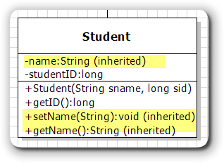

Inherited Members
Open main.cpp and look at the main() function, which creates a Student object (steve), and then call some of its member functions. Run the project by typing make run in the terminal. You'll see something like this:
getName()->Stephen
getID()->1007
Of course the Student object named steve can call the getID() member function, which was defined in the Student class. No surprises there!
However, it can also call the setName() and getName() member functions, which were not defined in Student, but in Person. More importantly, those member functions can read and change the name data member in the Person class as if name were declared inside the Student class. Why?

When you create Student objects, each derived class object contains all of the data members and member functions of its base class. If you were to look at a "logical" diagram of the Student class, it would look something like that shown here.
However, (very important), the data members will not be directly accessible to the derived class object, because they were declared private in the base class.
 This course content is offered under a
CC
Attribution Non-Commercial license. Content in this course
can be considered under this license unless otherwise noted.
This course content is offered under a
CC
Attribution Non-Commercial license. Content in this course
can be considered under this license unless otherwise noted.